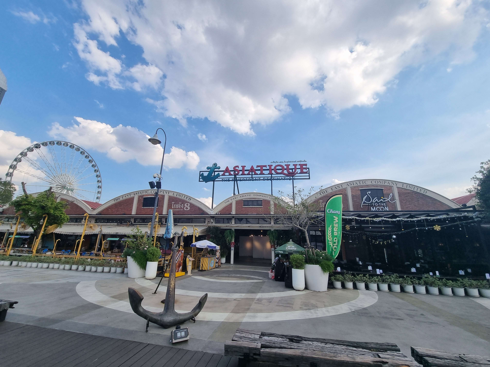
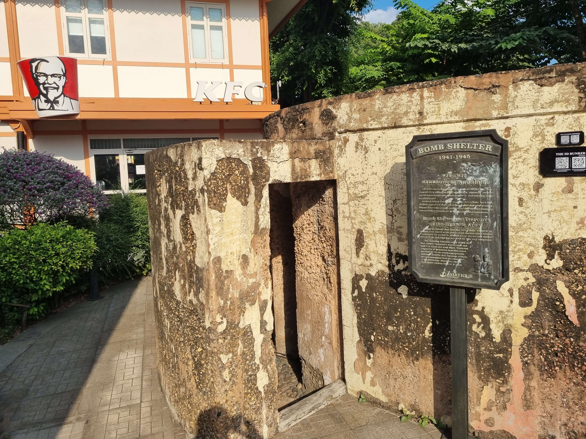
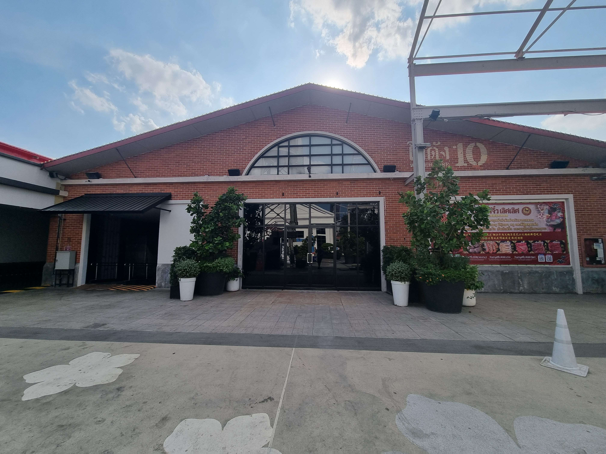
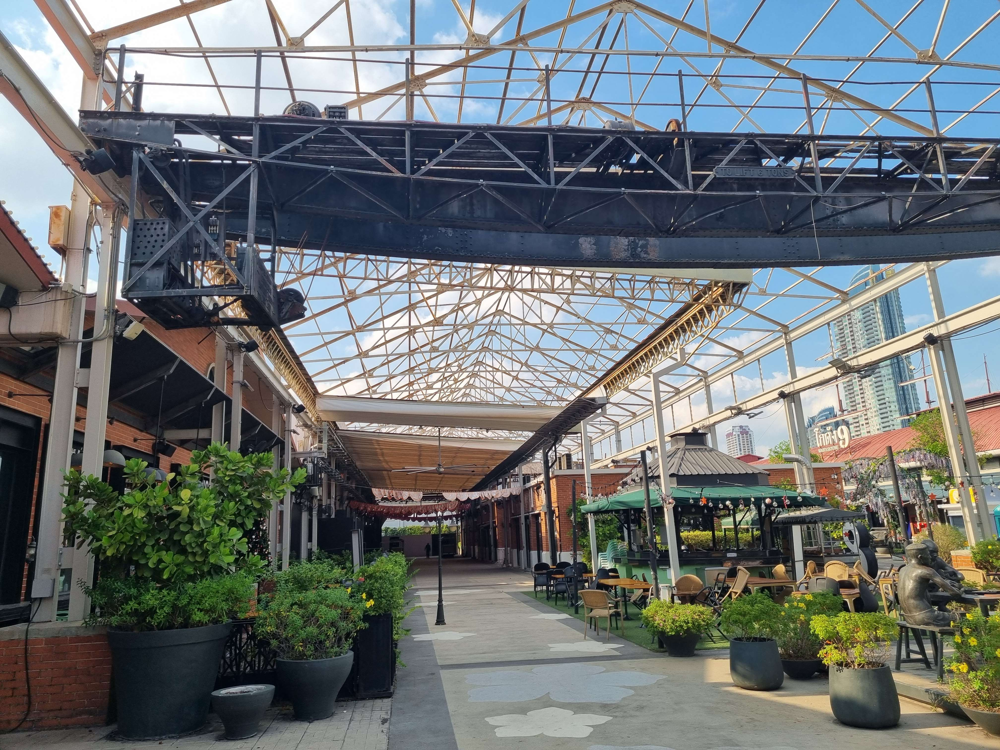
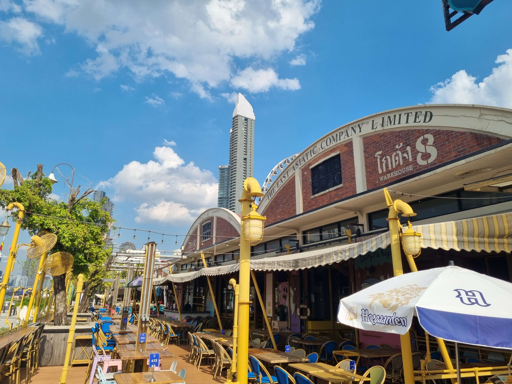
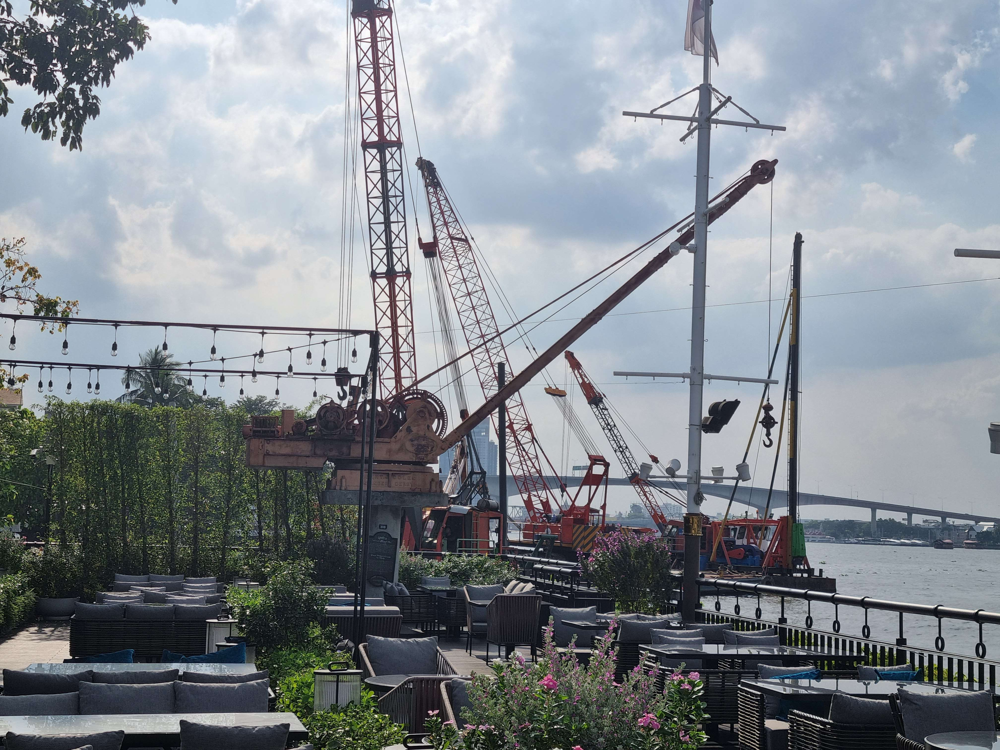
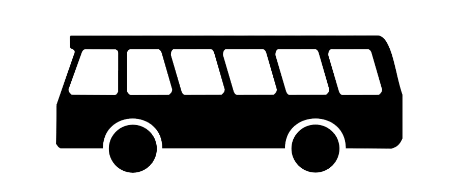
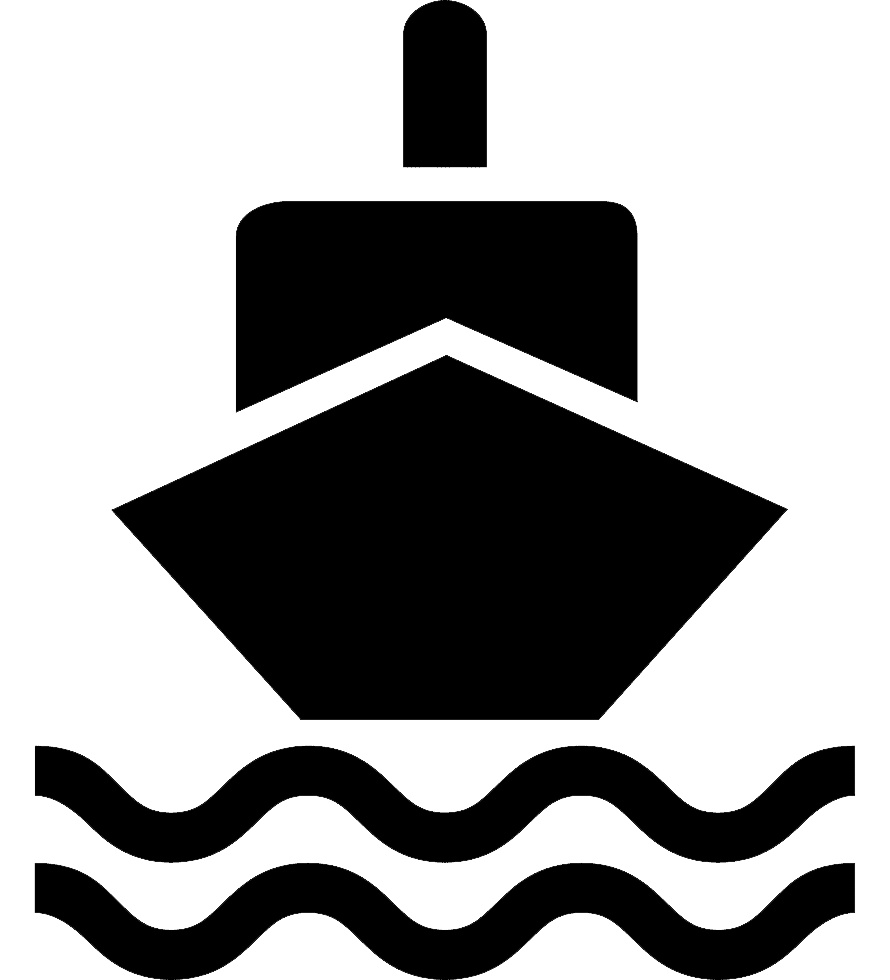

เอเชียทีค เดอะ ริเวอร์ฟร้อนท์ (Asiatique The Riverfront)
เป็นศูนย์การค้าและแหล่งท่องเที่ยวเชิงประวัติศาสตร์ที่ตั้งอยู่ทางทิศตะวันออกของแม่น้ำเจ้าพระยา อยู่ระหว่างซอยเจริญกรุง 72-76 ถนนเจริญกรุง แขวงวัดพระยาไกร เขตบางคอแหลม กรุงเทพมหานคร
สถานที่นี้มีการปรับปรุงและเปลี่ยนโครงสร้างของพื้นที่โรงงานเก่าให้กลายเป็นพื้นที่ช้อปปิ้งและอาหารริมน้ำ ภายใต้คอนเซ็ปต์ Festival Market and living Museum งานจะถูกแบ่งเป็น 4 ย่านหลัก
ได้แก่ ย่านเจริญกรุง ย่านกลางเมือง ย่านโรงงาน และจุดชมวิว ที่มีบรรยากาศแสดงถึงความรุ่งโรจน์ ของถนนเจริญกรุงในช่วงสมัยรัชกาลที่ 5
สถานที่ท่องเที่ยวตามรอยประวัติศาสตร์รัชสมัย ร.5 ทั้ง 7 จุด

หลุมหลบภัยสมัยสงครามโลก
เป็นหลุมหลบภัยสมัยสงครามโลกครั้งที่ 2 ช่วงปี 1941- 1945
ตั้งอยู่ทางโซนด้านหน้าของเอเชียทีค
รางรถโบราณ
ในท่าเรือ อีสท์ เอเชียทีค ใช้รถรางในการขนส่งแต่ยังคงสภาพ
สมบูรณ์อยู่เสมอ


โรงเลื่อยเก่า
โรงเลื่อยแห่งนี้ถูกปรับเปลี่ยนมาเป็นร้านอาหาร และร้านค้าแฟชั่น
แต่ยังคงรักษาโครงสร้างและโครงหลังคาเก่าไว้อย่างครบถ้วน
เครนโรงเลื่อย
เครนโรงเลื่อยตัวนี้ผ่านกาลเวลาและการใช้งานมาแล้วอย่างหนัก
แต่ยังคงสภาพสมบูรณ์อยู่เสมอ


ซุ้มโกดังสินค้า 100 ปี
ซุ้มหลังคาโค้งของโกดังแห่งนี้ ยังคงความสมบูรณ์ไว้ดีที่สุดด้วย
โครงสร้างที่ยังคงแข็งแรงจึงได้รับการปรับปรุงให้เป็น
ร้านอาหารและแหล่งรวมความบันเทิง
เครนยกของริมน้ำ
เป็นเครนที่ยังคงสภาพสมบูรณ์เหมือนในอดีต
คงรักษาโครงสร้างและโครงหลังคาเก่าไว้อย่างครบถ้วน


ท่าเรือประวัติศาสตร์
เป็นท่าเรือแห่งเดียวที่เทคโนโลยีและอารยธรรมต้องเข้ามาเทียบท่า
ก่อนเข้าสู้แผ่นดินไทย
ซึ่งปัจจุบันก็คือท่าเรือของเอเชียทีค เดอะริเวอร์ฟร้อนท์
2194 ถนนเจริญกรุง แขวงวัดพระยาไกร เขตบางคอแหลม กรุงเทพฯ
เปิดให้เข้าชม : 11.00-22.00 น.
โทร : 09-2246-0812
เว็บไซต์ : www.asiatiquethailand.com

สาย 1, 15, 17, 75, 504, 547
